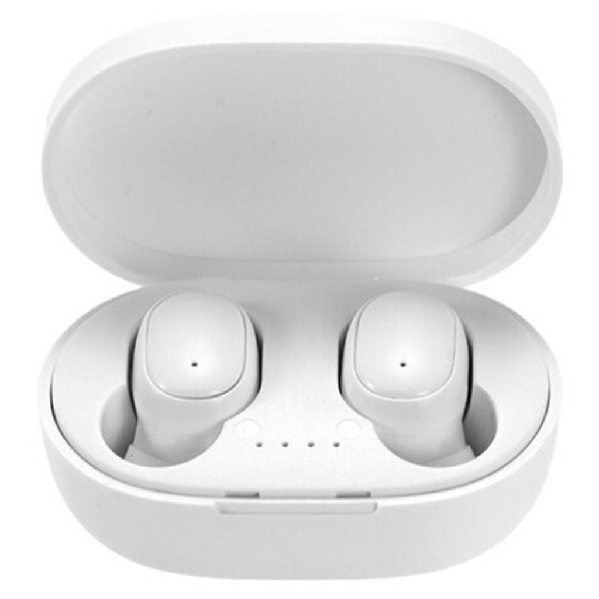

Auricular Inalámbrico In-ear A6S Bluetooth - Blanco
$ 8.500
Características destacadas
- Conexión: Bluetooth
- Duración Batería: 3.5hs Aprox
- Mic: Si, incorporado
- Funciones: Play/Pausa, Cambiar Canción, Atender / Cortar llamada
- Contiene: Caja Cargadora para Cargar los Auriculares– Izquierdo y Derecho – Cable Micro USB de Carga